Code
library(MASS)
library(tidyverse)
library(broom)
library(jtools)
#library(skimr)DISCLAIMER: Saikat is an employee of GSK. The content, views and opinios expressed in this notebook and during the class are absolutely Saikat’s own, and by no way reflects the official stand of GSK on these matters.
library(MASS)
library(tidyverse)
library(broom)
library(jtools)
#library(skimr)data(birthwt)
head(birthwt) low age lwt race smoke ptl ht ui ftv bwt
85 0 19 182 2 0 0 0 1 0 2523
86 0 33 155 3 0 0 0 0 3 2551
87 0 20 105 1 1 0 0 0 1 2557
88 0 21 108 1 1 0 0 1 2 2594
89 0 18 107 1 1 0 0 1 0 2600
91 0 21 124 3 0 0 0 0 0 2622Execute the following code in your computer to explore what the above variables are
help(birthwt)Dimension of the dataset
dim(birthwt)[1] 189 10#skimr::skim(birthwt)Which variables are predictors of child’s birth weight?
The first step in any analysis is to visually explore the data. Let us plot child’s birth wights in the dataset.
ggplot(data = birthwt, aes(x = bwt)) +
geom_histogram(bins = 10, color = 'black', fill = 'lightblue3') +
labs(x = "\nBirth Weight (in grams)", y = "Count\n") +
theme_classic() +
theme(text = element_text(size = 15))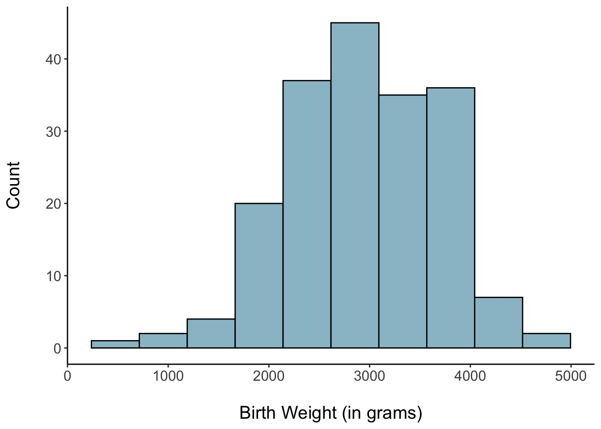
**The birth weights are given in grams. Let us change the unit of birth weight to kg.”
ggplot(data = birthwt, aes(x = bwt/1000)) +
geom_histogram(bins = 10, color = 'black', fill = 'lightblue3') +
labs(x = "\nBirth Weight (in kg)", y = "Count\n") +
theme_classic() +
theme(text = element_text(size = 15))ggplot(data = birthwt, aes(y = bwt/1000, x = age)) +
geom_point(color = 'black') +
labs(y = "Birth Weight (in kg)\n", x = "\nMother's Age") +
geom_smooth(method = 'lm', color = 'red') +
theme_classic() +
theme(text = element_text(size = 15))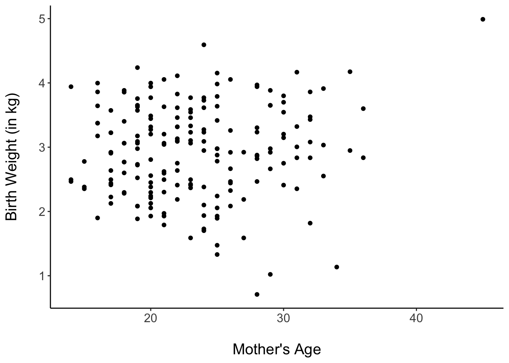
There dosen’t appear to be any relation.
ggplot(data = birthwt, aes(y = bwt/1000, x = lwt*0.454)) +
#The mother's weight is given in pounds. The 0.454 multiplier is for
#converting it into kgs
geom_point(color = 'black') +
labs(y = "Birth Weight (in kg)\n", x = "\nMother's Weight (in kg)") +
geom_smooth(method = 'lm', color = 'red') +
theme_classic() +
theme(text = element_text(size = 15))
There could be some relation.
#Run the model
birthwt_modat <- birthwt %>%
mutate(bwt2 = bwt/1000) %>%
mutate(lwt2 = lwt*0.454)
lm_simple <- lm(bwt2 ~ lwt2, data = birthwt_modat)
#Convert the model object into tidy
lm_simple_tidy <- broom::tidy(lm_simple)
#Plot the coefficients
ggplot(lm_simple_tidy, aes(y = term, x= estimate)) +
geom_point(color = "darkred") +
geom_errorbar(aes(xmin = estimate - 1.96*std.error,
xmax = estimate + 1.96*std.error), width = 0.25,
color = 'black') +
labs(x = "\nCoefficient +/- CI", y = "") +
geom_vline(xintercept = 0, color = "red", linetype = "dashed") +
scale_y_discrete(labels = c("Intercept", "Mother's Weight")) +
theme_classic() +
theme(text = element_text(size = 15))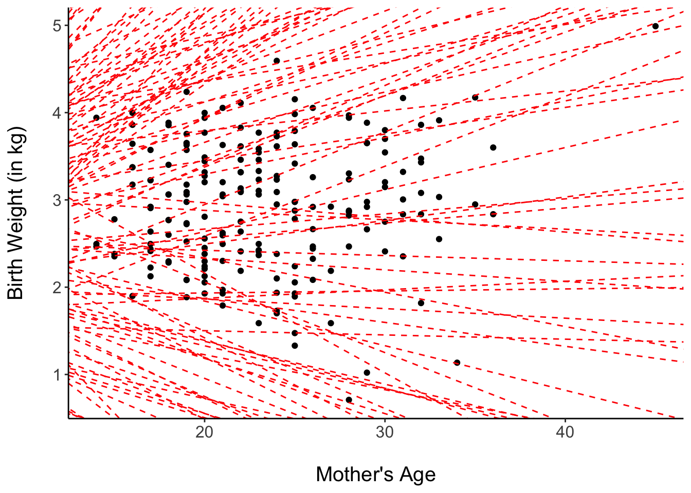
#Plot only the coefficient for mother's weight
ggplot(lm_simple_tidy[2,], aes(y = term, x= estimate)) +
geom_point(color = "darkred") +
geom_errorbar(aes(xmin = estimate - 1.96*std.error,
xmax = estimate + 1.96*std.error), width = 0.25,
color = 'black') +
geom_vline(xintercept = 0, color = "red", linetype = "dashed") +
labs(x = "\nCoefficient +/- CI", y = "") +
scale_y_discrete(labels = c("Mother's Weight")) +
theme_classic() +
theme(text = element_text(size = 15))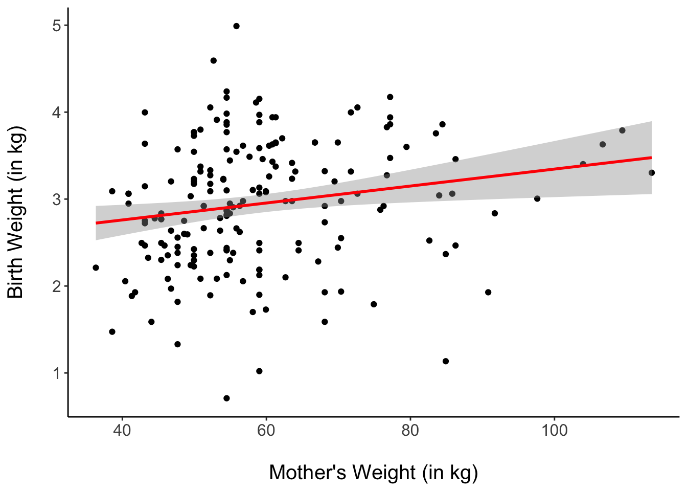
#Model diagnostics
for (i in 1:6){
plot(lm_simple, i)
}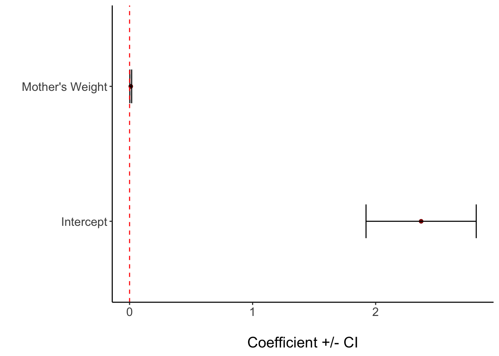
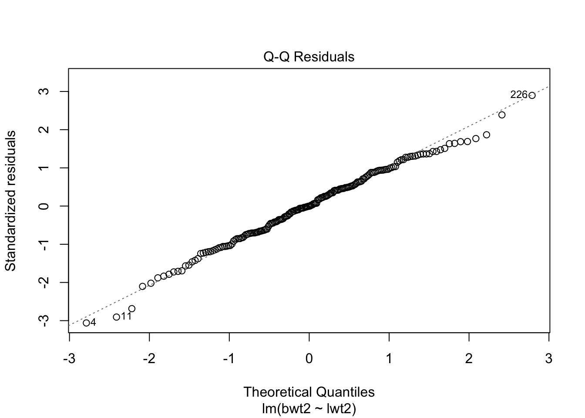
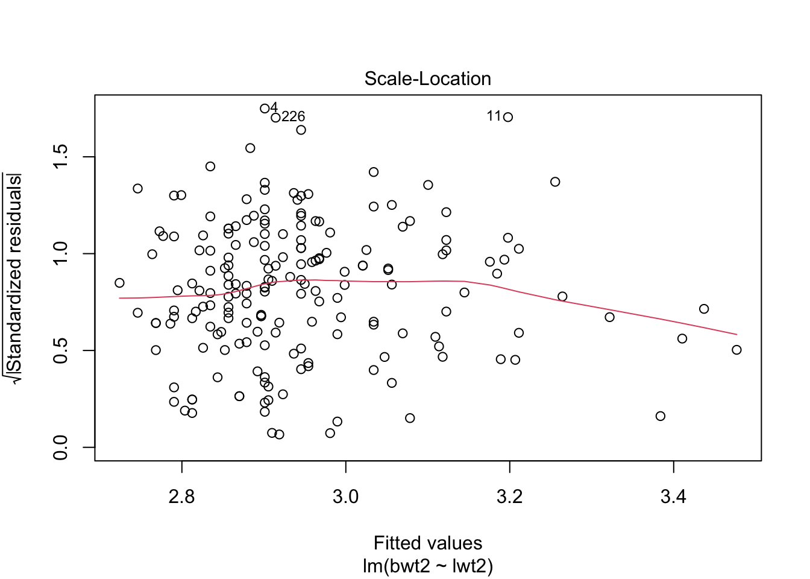
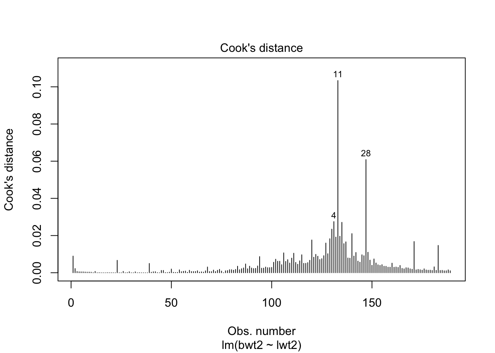
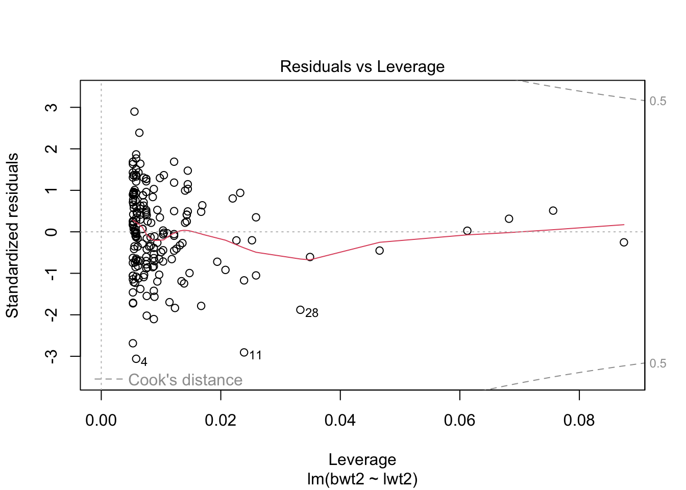
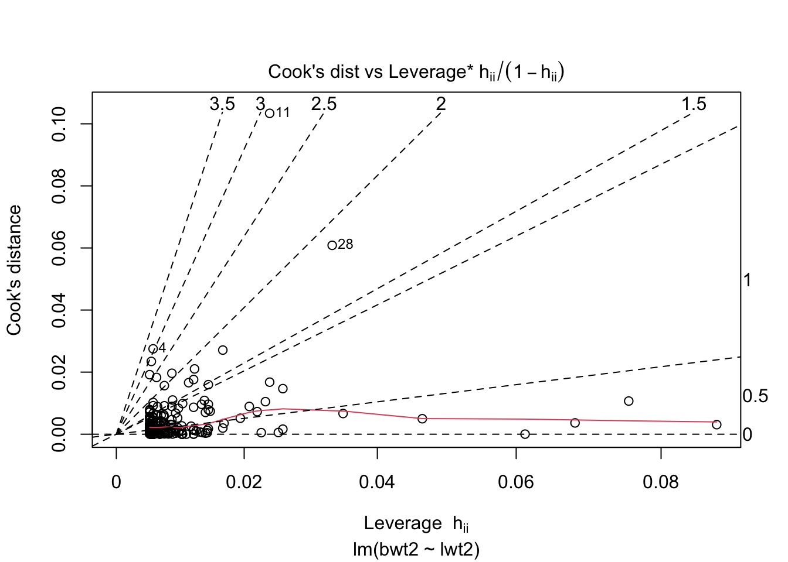
ggplot(birthwt_modat, aes(x = predict(lm_simple), y=bwt2)) +
geom_point(color = "darkred") +
geom_abline(intercept = 0, slope = 1) +
labs(x = "\nPredicted Birth Weight", y = "Actual Birth Weight\n") +
theme_classic() +
theme(text = element_text(size = 15))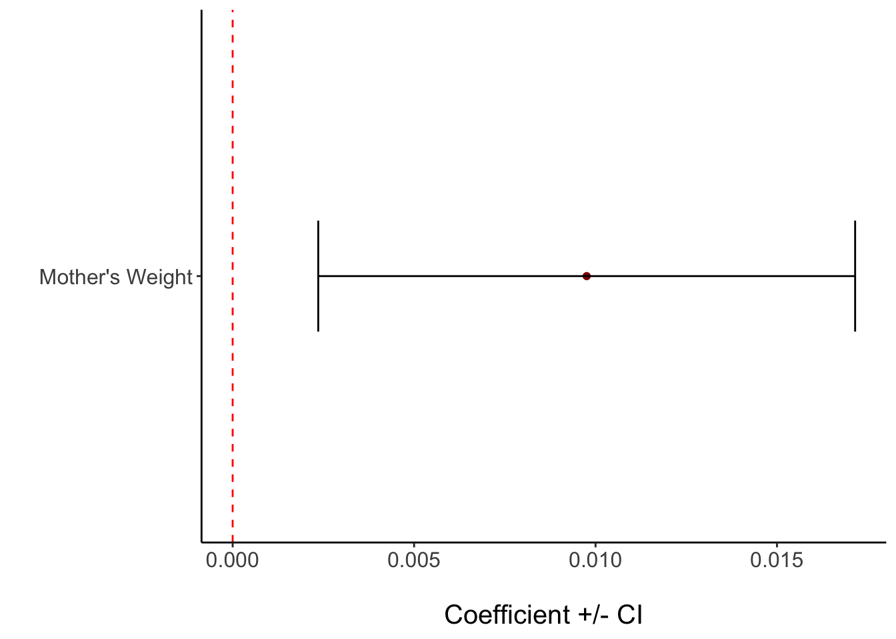
summary(lm_simple)
Call:
lm(formula = bwt2 ~ lwt2, data = birthwt_modat)
Residuals:
Min 1Q Median 3Q Max
-2.19212 -0.49797 -0.00384 0.50832 2.07560
Coefficients:
Estimate Std. Error t value Pr(>|t|)
(Intercept) 2.369624 0.228493 10.371 <2e-16 ***
lwt2 0.009756 0.003774 2.585 0.0105 *
---
Signif. codes: 0 '***' 0.001 '**' 0.01 '*' 0.05 '.' 0.1 ' ' 1
Residual standard error: 0.7184 on 187 degrees of freedom
Multiple R-squared: 0.0345, Adjusted R-squared: 0.02933
F-statistic: 6.681 on 1 and 187 DF, p-value: 0.0105lm_simple_tidy# A tibble: 2 × 5
term estimate std.error statistic p.value
<chr> <dbl> <dbl> <dbl> <dbl>
1 (Intercept) 2.37 0.228 10.4 3.40e-20
2 lwt2 0.00976 0.00377 2.58 1.05e- 2As you saw, we summarized our model at the last step. Only after we have explored the model considerably. Although, we observed a significant p-value, the predicted vs observed plot suggest that our model is not that good in predicting what the newborns’ birth weight is going to be. Furthermore, the R-squared suggest that our model can explain only 3% of the overall variance in the children’s birthweght. Therefore, we must always be careful in interpreting our models from p-values alone.
For example, is there any relation between mother’s uterine irritability and child’s birth weight
#Plot the distribution of uterine irritability
ggplot(birthwt_modat, aes(x = as.factor(ui), y = bwt2)) +
geom_boxplot() +
geom_dotplot(binaxis='y', stackdir='center', fill = "red", color = "black") +
#stat_summary(fun.data=mean_sdl, fun.args = list(mult=1),
# geom="pointrange", color="red") +
labs(x = "\nUterine Irritability", y = "Child's Birth Weight\n") +
scale_x_discrete(labels = c("Absent", "Present")) +
theme_classic() +
theme(text = element_text(size = 15))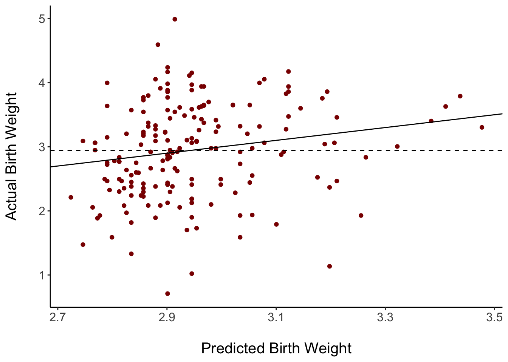
#Plot the distribution of uterine irritability
ggplot(birthwt_modat, aes(x = as.factor(smoke), y = bwt2)) +
geom_boxplot() +
geom_dotplot(binaxis='y', stackdir='center', color = "black", fill = "red") +
#stat_summary(fun.data=mean_sdl, fun.args = list(mult=1),
# geom="pointrange", color="red") +
labs(x = "\nMother's Smoking Status", y = "Child's Birth Weight\n") +
scale_x_discrete(labels = c("Non-smoker", "Smoker")) +
theme_classic() +
theme(text = element_text(size = 15))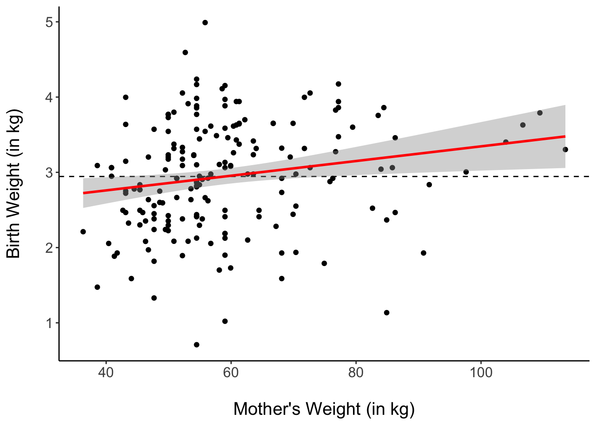
#Step1: Fit a linear model
lm_simple2 <- lm(bwt2 ~ as.factor(smoke), data = birthwt_modat)
#Step2: Convert the model object into tidy
lm_simple2_tidy <- broom::tidy(lm_simple2)
#Step3: Plot the coefficients
ggplot(lm_simple2_tidy, aes(y = term, x= estimate)) +
geom_point(color = "darkred") +
geom_errorbar(aes(xmin = estimate - 1.96*std.error,
xmax = estimate + 1.96*std.error), width = 0.25,
color = 'black') +
labs(x = "\nCoefficient +/- CI", y = "") +
scale_y_discrete(labels = c("Intercept", "Mother's Smoking Status")) +
theme_classic() +
geom_vline(xintercept = 0, color = "red", linetype = "dashed") +
theme(text = element_text(size = 15))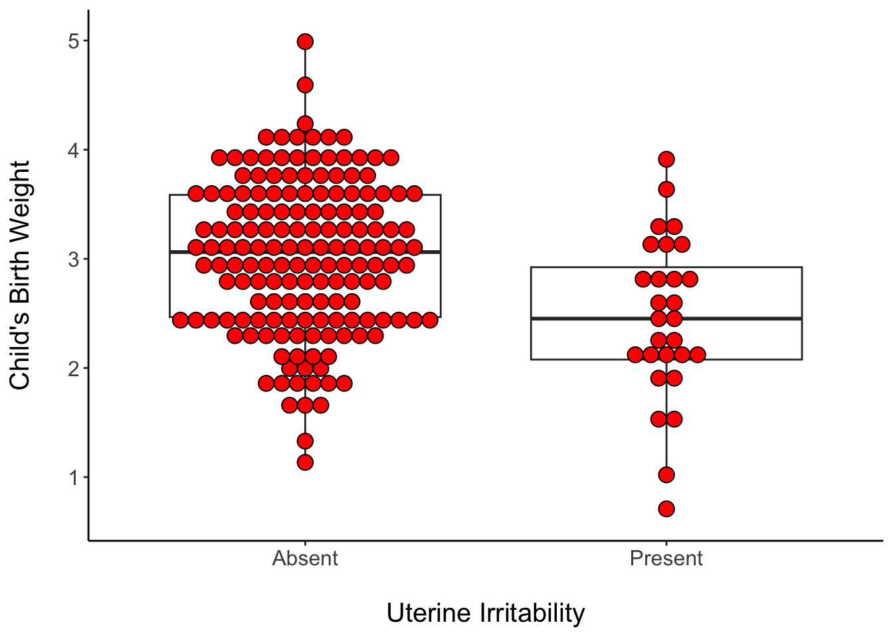
#Step4: Get the diagnostic plots
for (i in 1:6){
plot(lm_simple2, i)
}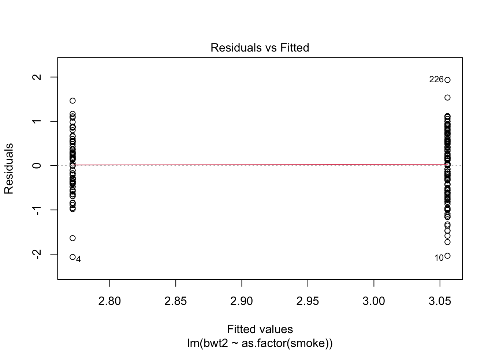
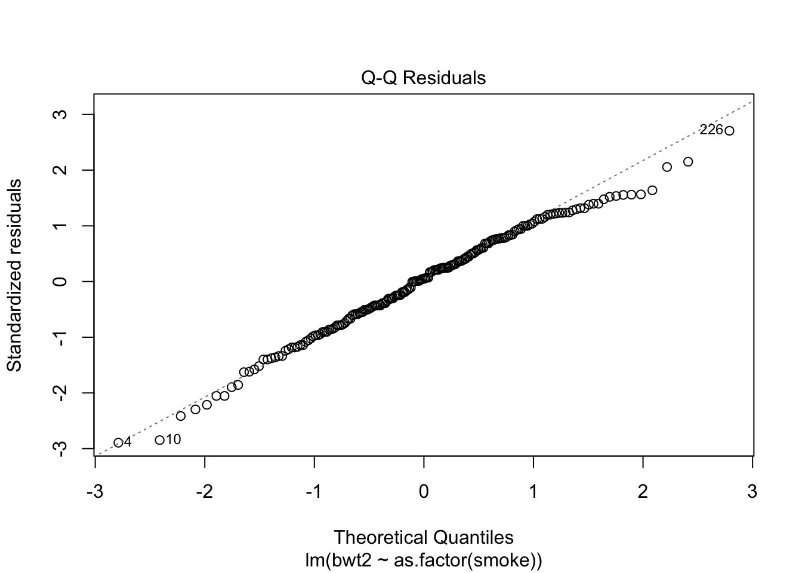
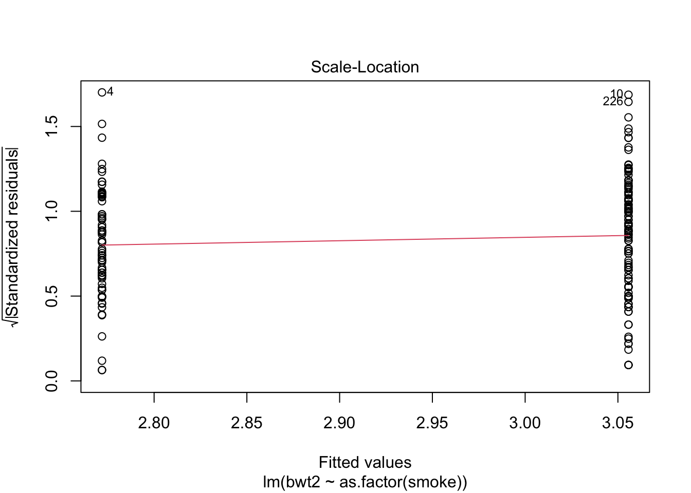
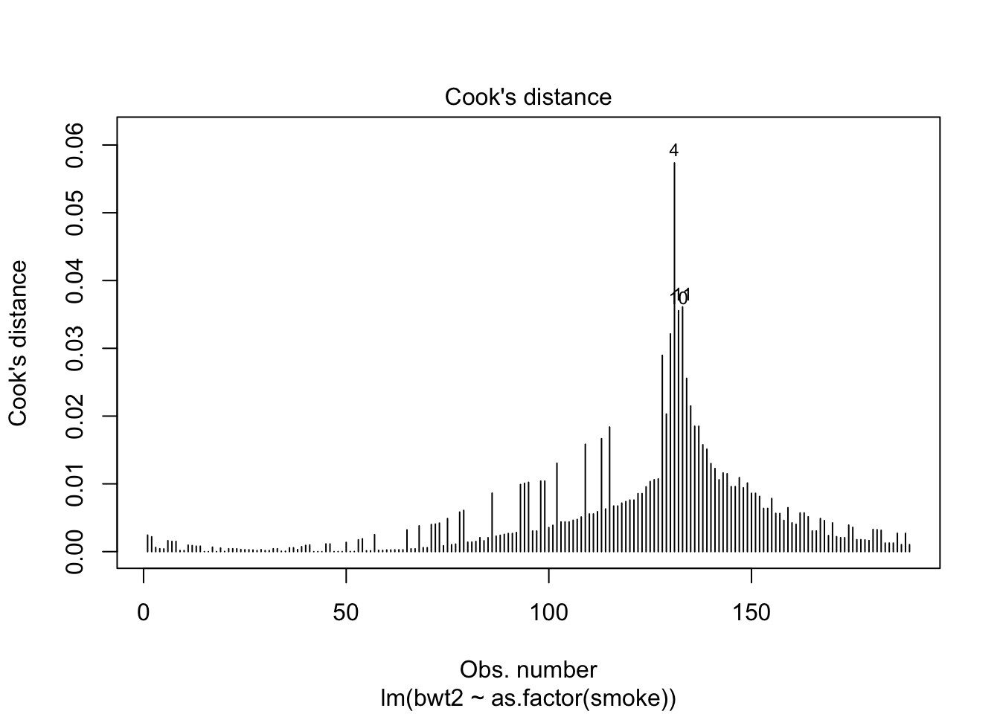
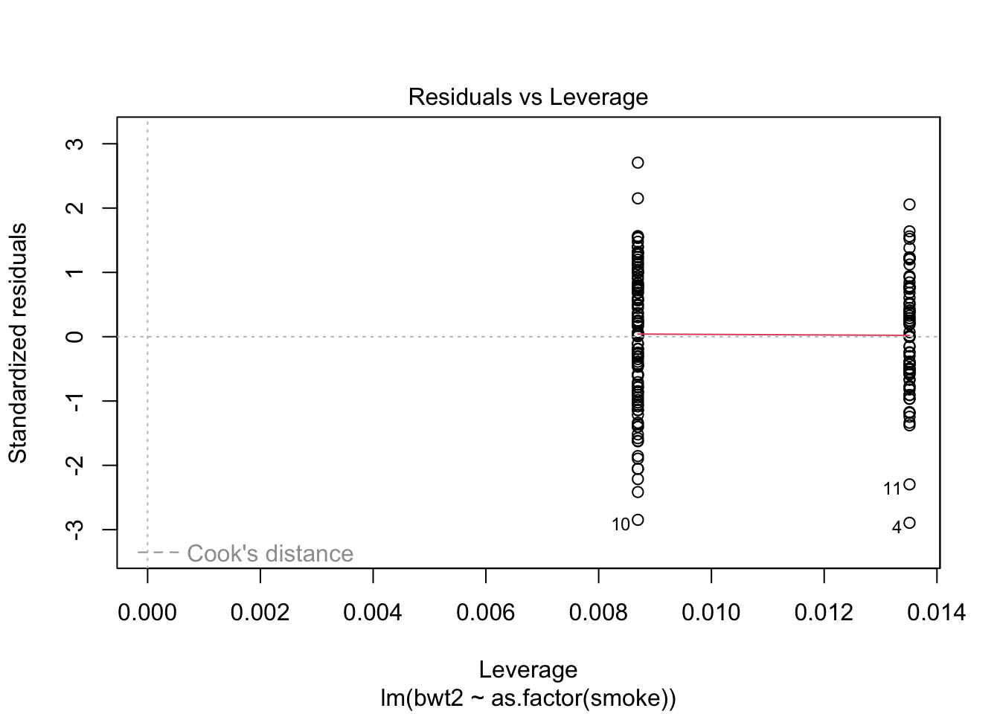
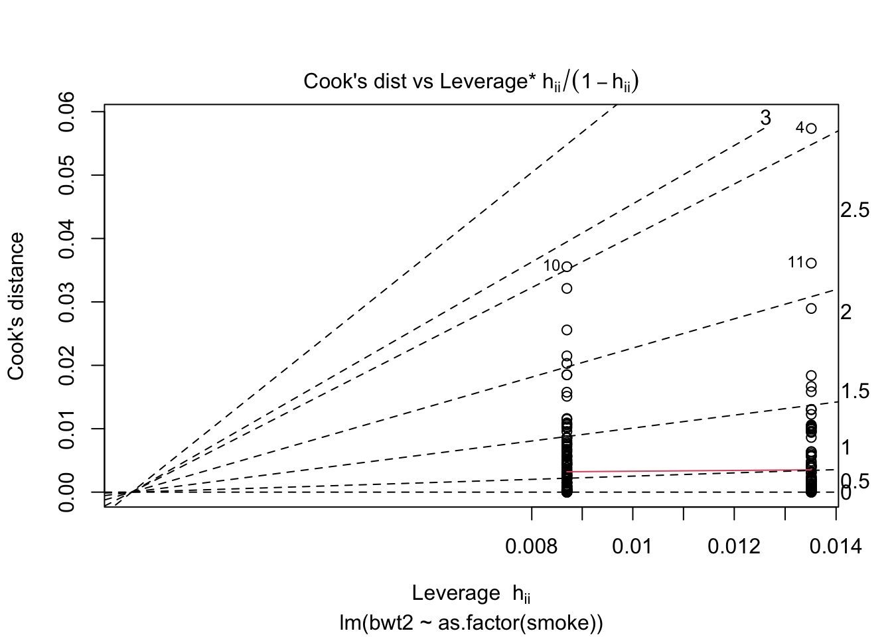
#Step5: Get the predicted vs observed plot
ggplot(birthwt_modat, aes(x = predict(lm_simple2), y=bwt2, color = as.factor(smoke))) +
geom_point() +
geom_abline(intercept = 0, slope = 1) +
labs(x = "\nPredicted Birth Weight", y = "Actual Birth Weight\n") +
theme_classic() +
theme(text = element_text(size = 15))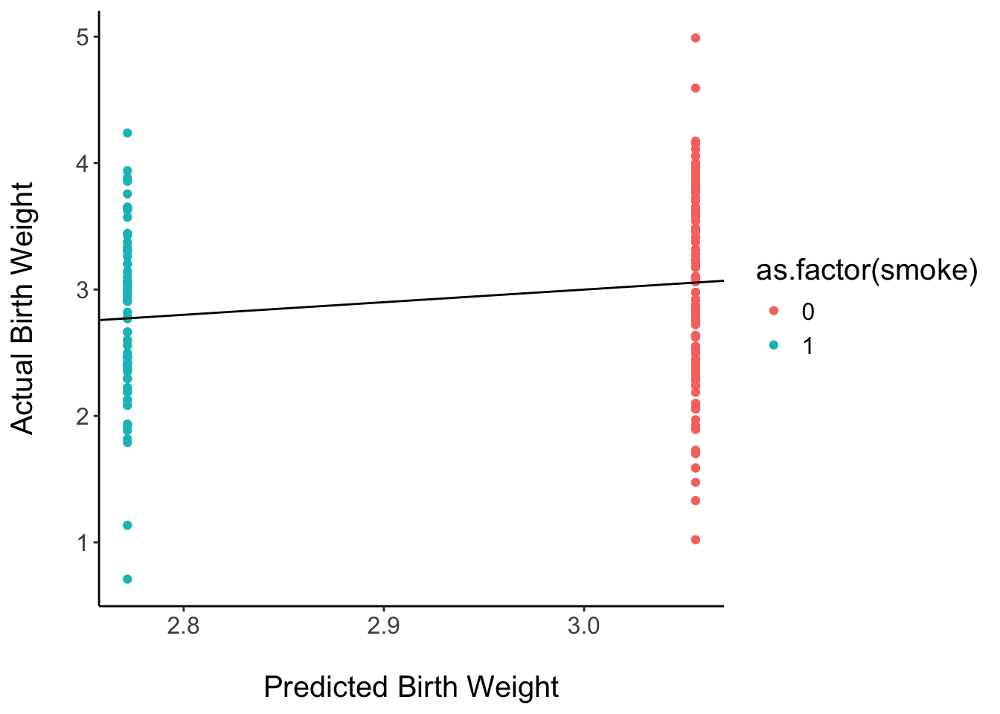
#Step6: Summarize your model
summary(lm_simple2)
Call:
lm(formula = bwt2 ~ as.factor(smoke), data = birthwt_modat)
Residuals:
Min 1Q Median 3Q Max
-2.0629 -0.4759 0.0343 0.5451 1.9343
Coefficients:
Estimate Std. Error t value Pr(>|t|)
(Intercept) 3.05570 0.06693 45.653 < 2e-16 ***
as.factor(smoke)1 -0.28378 0.10697 -2.653 0.00867 **
---
Signif. codes: 0 '***' 0.001 '**' 0.01 '*' 0.05 '.' 0.1 ' ' 1
Residual standard error: 0.7178 on 187 degrees of freedom
Multiple R-squared: 0.03627, Adjusted R-squared: 0.03112
F-statistic: 7.038 on 1 and 187 DF, p-value: 0.008667# 1. Child's weight vs mother's weight
anova(lm_simple)Analysis of Variance Table
Response: bwt2
Df Sum Sq Mean Sq F value Pr(>F)
lwt2 1 3.449 3.4486 6.6814 0.0105 *
Residuals 187 96.521 0.5162
---
Signif. codes: 0 '***' 0.001 '**' 0.01 '*' 0.05 '.' 0.1 ' ' 1#Calculate R-squared
anova(lm_simple)$`Sum Sq`[1]/sum(anova(lm_simple)$`Sum Sq`)[1] 0.03449685#Compare with regression coefficients
summary(lm_simple)
Call:
lm(formula = bwt2 ~ lwt2, data = birthwt_modat)
Residuals:
Min 1Q Median 3Q Max
-2.19212 -0.49797 -0.00384 0.50832 2.07560
Coefficients:
Estimate Std. Error t value Pr(>|t|)
(Intercept) 2.369624 0.228493 10.371 <2e-16 ***
lwt2 0.009756 0.003774 2.585 0.0105 *
---
Signif. codes: 0 '***' 0.001 '**' 0.01 '*' 0.05 '.' 0.1 ' ' 1
Residual standard error: 0.7184 on 187 degrees of freedom
Multiple R-squared: 0.0345, Adjusted R-squared: 0.02933
F-statistic: 6.681 on 1 and 187 DF, p-value: 0.0105# 2. Child's weight vs Mother's smoking status
anova(lm_simple2)Analysis of Variance Table
Response: bwt2
Df Sum Sq Mean Sq F value Pr(>F)
as.factor(smoke) 1 3.626 3.6259 7.0378 0.008667 **
Residuals 187 96.344 0.5152
---
Signif. codes: 0 '***' 0.001 '**' 0.01 '*' 0.05 '.' 0.1 ' ' 1#Calculate R-squared
anova(lm_simple2)$`Sum Sq`[1]/sum(anova(lm_simple2)$`Sum Sq`)[1] 0.03627047#Compare with regression coefficients
summary(lm_simple2)
Call:
lm(formula = bwt2 ~ as.factor(smoke), data = birthwt_modat)
Residuals:
Min 1Q Median 3Q Max
-2.0629 -0.4759 0.0343 0.5451 1.9343
Coefficients:
Estimate Std. Error t value Pr(>|t|)
(Intercept) 3.05570 0.06693 45.653 < 2e-16 ***
as.factor(smoke)1 -0.28378 0.10697 -2.653 0.00867 **
---
Signif. codes: 0 '***' 0.001 '**' 0.01 '*' 0.05 '.' 0.1 ' ' 1
Residual standard error: 0.7178 on 187 degrees of freedom
Multiple R-squared: 0.03627, Adjusted R-squared: 0.03112
F-statistic: 7.038 on 1 and 187 DF, p-value: 0.008667Repeat simple linear regression with uterine irritability (ui) as the explanatory variable and child’s weight as response
#One last plot before we go
birthwt_modat$pred <- predict(lm_simple)
birthwt_modat2 <- birthwt_modat %>%
pivot_longer(cols = c(bwt2, pred), names_to = "Type", values_to = "Values")
ggplot(birthwt_modat2, aes(x = lwt2, y = Values, color = Type)) +
geom_point() +
geom_smooth(method = 'lm') +
theme_classic() +
theme(legend.title = element_blank()) +
scale_color_manual(labels = c("Observed", "Predicted"), values = c("blue", "red")) +
theme(text = element_text(size = 18)) +
labs(x = "\nMother's Weight", y = "Child's Weight\n")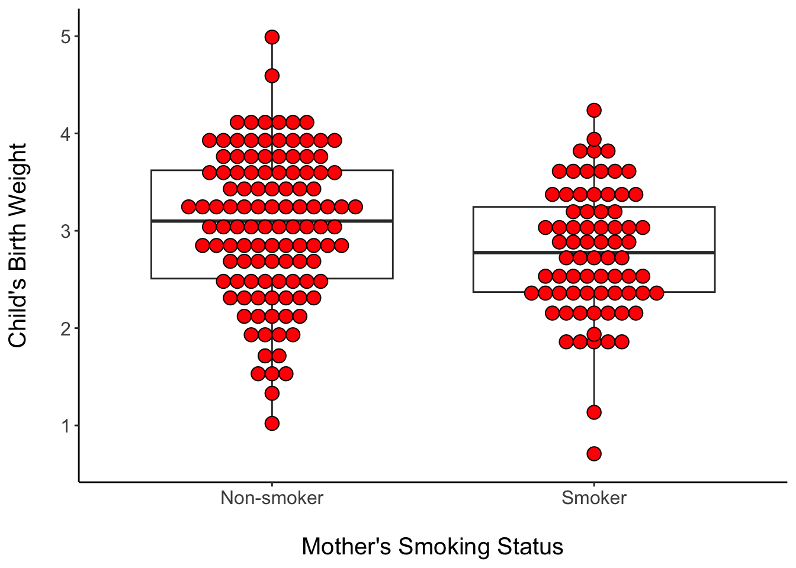